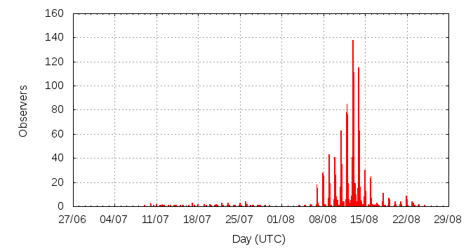

[ www.imo.net ]
This page shows automated results of the Perseids 2015, based on visual observations reported by citizen scientists through the report form of the International Meteor Organization (IMO). The information on this page is generated automatically; for scientific use please refer to manual analyses published in scientific journals (such as WGN). Send your feedback regarding this page to Geert Barentsen.
Page contents:
 12-13 August in detail (NEW)
12-13 August in detail (NEW)Note that the data will finally go into the Visual Meteor Database (VMDB) with manual inspection and rectifications. We are curretly completing the files of 2008-2011. The VMDB is an enormous project - any help will be greatly appreciated.
Page generated: 2016 February 29 at 4:00 UTC.
The graph below shows the ZHR (Zenithal Hourly Rate), which is the number of meteors an observer would see under a very dark sky with the radiant of the shower in zenith.
ZHRmax = 95 based on 40091 Perseids reported in 5006 intervals, assuming population index r = 2.0

| Time (UTC) | Solarlon | nINT | nPER | ZHR | Particle density | |
|---|---|---|---|---|---|---|
| 2015-07-10 15:23 | 107.854 | 12 | 13 | 4 | ±1 | 4 / 109·km3 |
| 2015-07-13 05:18 | 110.314 | 13 | 14 | 3 | ±1 | 3 / 109·km3 |
| 2015-07-16 21:11 | 113.808 | 13 | 20 | 6 | ±1 | 6 / 109·km3 |
| 2015-07-19 04:52 | 116.022 | 12 | 25 | 6 | ±1 | 6 / 109·km3 |
| 2015-07-20 21:55 | 117.656 | 6 | 22 | 6 | ±1 | 6 / 109·km3 |
| 2015-07-22 02:19 | 118.785 | 9 | 21 | 8 | ±2 | 8 / 109·km3 |
| 2015-07-23 01:12 | 119.695 | 5 | 21 | 8 | ±2 | 8 / 109·km3 |
| 2015-07-24 04:29 | 120.781 | 9 | 23 | 8 | ±2 | 8 / 109·km3 |
| 2015-07-24 23:46 | 121.548 | 8 | 20 | 7 | ±2 | 7 / 109·km3 |
| 2015-07-25 20:20 | 122.366 | 7 | 20 | 6 | ±1 | 6 / 109·km3 |
| 2015-07-26 03:39 | 122.657 | 5 | 27 | 10 | ±2 | 9 / 109·km3 |
| 2015-07-26 23:19 | 123.440 | 4 | 26 | 18 | ±3 | 17 / 109·km3 |
| 2015-07-27 16:17 | 124.116 | 2 | 21 | 16 | ±3 | 15 / 109·km3 |
| 2015-07-28 08:19 | 124.754 | 3 | 21 | 13 | ±3 | 12 / 109·km3 |
| 2015-07-29 13:45 | 125.925 | 2 | 14 | 14 | ±4 | 13 / 109·km3 |
| 2015-08-05 03:12 | 132.200 | 9 | 22 | 12 | ±3 | 11 / 109·km3 |
| 2015-08-06 22:23 | 133.923 | 91 | 192 | 12 | ±1 | 11 / 109·km3 |
| 2015-08-07 10:35 | 134.410 | 3 | 20 | 48 | ±10 | 45 / 109·km3 |
| 2015-08-07 23:07 | 134.910 | 155 | 600 | 16 | ±1 | 15 / 109·km3 |
| 2015-08-08 12:27 | 135.443 | 7 | 21 | 16 | ±3 | 15 / 109·km3 |
| 2015-08-08 23:10 | 135.871 | 257 | 1281 | 23 | ±1 | 22 / 109·km3 |
| 2015-08-09 06:42 | 136.171 | 6 | 27 | 24 | ±5 | 23 / 109·km3 |
| 2015-08-09 22:50 | 136.816 | 194 | 936 | 23 | ±1 | 22 / 109·km3 |
| 2015-08-10 02:33 | 136.965 | 21 | 131 | 21 | ±2 | 20 / 109·km3 |
| 2015-08-10 09:04 | 137.225 | 15 | 216 | 21 | ±1 | 20 / 109·km3 |
| 2015-08-10 21:54 | 137.738 | 240 | 1191 | 25 | ±1 | 24 / 109·km3 |
| 2015-08-11 00:48 | 137.854 | 195 | 1314 | 27 | ±1 | 26 / 109·km3 |
| 2015-08-11 08:14 | 138.151 | 25 | 213 | 22 | ±2 | 21 / 109·km3 |
| 2015-08-11 21:36 | 138.685 | 283 | 1486 | 34 | ±1 | 32 / 109·km3 |
| 2015-08-12 00:24 | 138.798 | 375 | 2884 | 37 | ±1 | 35 / 109·km3 |
| 2015-08-12 08:13 | 139.110 | 46 | 381 | 41 | ±2 | 39 / 109·km3 |
| 2015-08-12 17:17 | 139.473 | 57 | 653 | 86 | ±3 | 81 / 109·km3 |
| 2015-08-12 22:47 | 139.693 | 991 | 10142 | 76 | ±1 | 72 / 109·km3 |
| 2015-08-13 02:33 | 139.843 | 482 | 5505 | 95 | ±1 | 90 / 109·km3 |
| 2015-08-13 09:21 | 140.116 | 143 | 1833 | 89 | ±2 | 84 / 109·km3 |
| 2015-08-13 19:20 | 140.515 | 171 | 1296 | 84 | ±2 | 79 / 109·km3 |
| 2015-08-13 22:55 | 140.658 | 640 | 6387 | 58 | ±1 | 55 / 109·km3 |
| 2015-08-14 06:19 | 140.955 | 20 | 220 | 39 | ±3 | 37 / 109·km3 |
| 2015-08-14 09:59 | 141.101 | 18 | 211 | 38 | ±3 | 36 / 109·km3 |
| 2015-08-14 19:00 | 141.463 | 17 | 167 | 46 | ±4 | 43 / 109·km3 |
| 2015-08-14 23:28 | 141.641 | 153 | 1193 | 33 | ±1 | 31 / 109·km3 |
| 2015-08-15 15:13 | 142.272 | 12 | 31 | 19 | ±3 | 18 / 109·km3 |
| 2015-08-15 22:38 | 142.569 | 82 | 406 | 21 | ±1 | 20 / 109·km3 |
| 2015-08-16 06:29 | 142.883 | 10 | 57 | 14 | ±2 | 13 / 109·km3 |
| 2015-08-16 19:15 | 143.395 | 3 | 20 | 19 | ±4 | 18 / 109·km3 |
| 2015-08-16 23:25 | 143.562 | 12 | 122 | 17 | ±2 | 16 / 109·km3 |
| 2015-08-17 15:54 | 144.222 | 5 | 24 | 11 | ±2 | 10 / 109·km3 |
| 2015-08-18 00:21 | 144.561 | 48 | 209 | 11 | ±1 | 10 / 109·km3 |
| 2015-08-18 17:15 | 145.238 | 6 | 20 | 9 | ±2 | 9 / 109·km3 |
| 2015-08-19 00:21 | 145.523 | 28 | 105 | 7 | ±1 | 7 / 109·km3 |
| 2015-08-20 00:32 | 146.493 | 15 | 73 | 7 | ±1 | 7 / 109·km3 |
| 2015-08-20 23:47 | 147.425 | 13 | 32 | 4 | ±1 | 4 / 109·km3 |
| 2015-08-21 23:35 | 148.380 | 24 | 82 | 6 | ±1 | 6 / 109·km3 |
| 2015-08-22 20:00 | 149.199 | 8 | 25 | 5 | ±1 | 5 / 109·km3 |
| 2015-08-23 02:58 | 149.479 | 3 | 27 | 9 | ±2 | 9 / 109·km3 |
| 2015-08-24 01:22 | 150.378 | 9 | 20 | 4 | ±1 | 4 / 109·km3 |
| 2015-08-24 23:08 | 151.253 | 4 | 8 | 14 | ±5 | 13 / 109·km3 |
The reported intervals are automatically added together into the bins shown above, based on the number of meteors and the distribution of the intervals. For each bin, the following parameters are computed:

| Time (UTC) | Solarlon | nINT | nPER | ZHR | Particle density | |
|---|---|---|---|---|---|---|
| 2015-08-11 06:39 | 138.088 | 6 | 55 | 32 | ±4 | 30 / 109·km3 |
| 2015-08-11 08:03 | 138.144 | 7 | 52 | 21 | ±3 | 20 / 109·km3 |
| 2015-08-11 09:25 | 138.198 | 6 | 56 | 21 | ±3 | 20 / 109·km3 |
| 2015-08-11 13:49 | 138.375 | 8 | 56 | 23 | ±3 | 22 / 109·km3 |
| 2015-08-11 18:46 | 138.573 | 14 | 52 | 43 | ±6 | 41 / 109·km3 |
| 2015-08-11 20:06 | 138.625 | 19 | 53 | 28 | ±4 | 26 / 109·km3 |
| 2015-08-11 20:35 | 138.645 | 10 | 52 | 43 | ±6 | 41 / 109·km3 |
| 2015-08-11 20:56 | 138.659 | 21 | 84 | 34 | ±4 | 32 / 109·km3 |
| 2015-08-11 21:14 | 138.671 | 25 | 208 | 62 | ±4 | 59 / 109·km3 |
| 2015-08-11 21:31 | 138.683 | 39 | 227 | 33 | ±2 | 31 / 109·km3 |
| 2015-08-11 21:53 | 138.697 | 36 | 207 | 35 | ±2 | 33 / 109·km3 |
| 2015-08-11 22:14 | 138.711 | 40 | 232 | 30 | ±2 | 28 / 109·km3 |
| 2015-08-11 22:34 | 138.724 | 46 | 221 | 24 | ±2 | 23 / 109·km3 |
| 2015-08-11 22:53 | 138.737 | 43 | 258 | 33 | ±2 | 31 / 109·km3 |
| 2015-08-11 23:13 | 138.750 | 35 | 198 | 33 | ±2 | 31 / 109·km3 |
| 2015-08-11 23:34 | 138.764 | 41 | 250 | 32 | ±2 | 30 / 109·km3 |
| 2015-08-11 23:52 | 138.776 | 46 | 379 | 34 | ±2 | 32 / 109·km3 |
| 2015-08-12 00:13 | 138.790 | 40 | 302 | 33 | ±2 | 31 / 109·km3 |
| 2015-08-12 00:32 | 138.803 | 38 | 265 | 32 | ±2 | 30 / 109·km3 |
| 2015-08-12 00:52 | 138.816 | 35 | 337 | 39 | ±2 | 37 / 109·km3 |
| 2015-08-12 01:14 | 138.831 | 27 | 288 | 48 | ±3 | 45 / 109·km3 |
| 2015-08-12 01:32 | 138.843 | 26 | 240 | 41 | ±3 | 39 / 109·km3 |
| 2015-08-12 01:51 | 138.856 | 25 | 228 | 42 | ±3 | 40 / 109·km3 |
| 2015-08-12 02:14 | 138.871 | 13 | 104 | 42 | ±4 | 40 / 109·km3 |
| 2015-08-12 02:38 | 138.887 | 4 | 64 | 69 | ±9 | 65 / 109·km3 |
| 2015-08-12 04:26 | 138.959 | 5 | 53 | 54 | ±7 | 51 / 109·km3 |
| 2015-08-12 06:16 | 139.032 | 13 | 52 | 29 | ±4 | 27 / 109·km3 |
| 2015-08-12 07:34 | 139.084 | 5 | 59 | 53 | ±7 | 50 / 109·km3 |
| 2015-08-12 08:25 | 139.118 | 6 | 52 | 43 | ±6 | 41 / 109·km3 |
| 2015-08-12 09:11 | 139.149 | 6 | 57 | 33 | ±4 | 31 / 109·km3 |
| 2015-08-12 10:06 | 139.185 | 5 | 65 | 53 | ±7 | 50 / 109·km3 |
| 2015-08-12 10:40 | 139.208 | 5 | 50 | 45 | ±6 | 43 / 109·km3 |
| 2015-08-12 13:09 | 139.308 | 10 | 57 | 61 | ±8 | 58 / 109·km3 |
| 2015-08-12 15:37 | 139.406 | 5 | 57 | 154 | ±20 | 146 / 109·km3 |
| 2015-08-12 16:35 | 139.445 | 5 | 54 | 79 | ±11 | 75 / 109·km3 |
| 2015-08-12 17:03 | 139.463 | 5 | 58 | 73 | ±10 | 69 / 109·km3 |
| 2015-08-12 17:29 | 139.481 | 5 | 72 | 90 | ±11 | 85 / 109·km3 |
| 2015-08-12 17:51 | 139.496 | 6 | 95 | 74 | ±8 | 70 / 109·km3 |
| 2015-08-12 18:12 | 139.509 | 7 | 80 | 77 | ±9 | 73 / 109·km3 |
| 2015-08-12 18:38 | 139.527 | 10 | 114 | 83 | ±8 | 78 / 109·km3 |
| 2015-08-12 18:59 | 139.541 | 10 | 124 | 86 | ±8 | 81 / 109·km3 |
| 2015-08-12 19:17 | 139.553 | 17 | 173 | 83 | ±6 | 78 / 109·km3 |
| 2015-08-12 19:39 | 139.568 | 14 | 161 | 81 | ±6 | 77 / 109·km3 |
| 2015-08-12 20:02 | 139.583 | 18 | 146 | 97 | ±8 | 92 / 109·km3 |
| 2015-08-12 20:18 | 139.594 | 26 | 185 | 88 | ±6 | 83 / 109·km3 |
| 2015-08-12 20:38 | 139.607 | 36 | 272 | 72 | ±4 | 68 / 109·km3 |
| 2015-08-12 20:59 | 139.621 | 37 | 238 | 72 | ±5 | 68 / 109·km3 |
| 2015-08-12 21:19 | 139.634 | 41 | 375 | 80 | ±4 | 76 / 109·km3 |
| 2015-08-12 21:39 | 139.647 | 64 | 462 | 77 | ±4 | 73 / 109·km3 |
| 2015-08-12 21:59 | 139.661 | 78 | 645 | 72 | ±3 | 68 / 109·km3 |
| 2015-08-12 22:18 | 139.674 | 61 | 606 | 74 | ±3 | 70 / 109·km3 |
| 2015-08-12 22:39 | 139.688 | 78 | 872 | 69 | ±2 | 65 / 109·km3 |
| 2015-08-12 23:00 | 139.701 | 76 | 834 | 60 | ±2 | 57 / 109·km3 |
| 2015-08-12 23:18 | 139.713 | 57 | 583 | 68 | ±3 | 64 / 109·km3 |
| 2015-08-12 23:38 | 139.727 | 78 | 1064 | 75 | ±2 | 71 / 109·km3 |
| 2015-08-12 23:59 | 139.741 | 75 | 758 | 70 | ±3 | 66 / 109·km3 |
| 2015-08-13 00:17 | 139.753 | 58 | 651 | 87 | ±3 | 82 / 109·km3 |
| 2015-08-13 00:39 | 139.767 | 82 | 1066 | 94 | ±3 | 89 / 109·km3 |
| 2015-08-13 00:59 | 139.781 | 109 | 1328 | 91 | ±2 | 86 / 109·km3 |
| 2015-08-13 01:18 | 139.794 | 97 | 1282 | 98 | ±3 | 93 / 109·km3 |
| 2015-08-13 01:38 | 139.807 | 82 | 987 | 88 | ±3 | 83 / 109·km3 |
| 2015-08-13 01:57 | 139.820 | 77 | 955 | 97 | ±3 | 92 / 109·km3 |
| 2015-08-13 02:19 | 139.834 | 41 | 423 | 86 | ±4 | 81 / 109·km3 |
| 2015-08-13 02:39 | 139.847 | 24 | 190 | 78 | ±6 | 74 / 109·km3 |
| 2015-08-13 03:02 | 139.863 | 13 | 171 | 101 | ±8 | 95 / 109·km3 |
| 2015-08-13 03:36 | 139.885 | 12 | 55 | 68 | ±9 | 64 / 109·km3 |
| 2015-08-13 04:16 | 139.912 | 7 | 56 | 103 | ±14 | 97 / 109·km3 |
| 2015-08-13 04:46 | 139.932 | 7 | 58 | 98 | ±13 | 93 / 109·km3 |
| 2015-08-13 05:06 | 139.946 | 4 | 54 | 107 | ±14 | 101 / 109·km3 |
| 2015-08-13 05:30 | 139.962 | 11 | 111 | 103 | ±10 | 97 / 109·km3 |
| 2015-08-13 05:51 | 139.976 | 12 | 99 | 109 | ±11 | 103 / 109·km3 |
| 2015-08-13 06:13 | 139.990 | 13 | 159 | 110 | ±9 | 104 / 109·km3 |
| 2015-08-13 06:32 | 140.003 | 16 | 142 | 94 | ±8 | 89 / 109·km3 |
| 2015-08-13 06:54 | 140.018 | 14 | 129 | 94 | ±8 | 89 / 109·km3 |
| 2015-08-13 07:14 | 140.031 | 9 | 109 | 97 | ±9 | 92 / 109·km3 |
| 2015-08-13 07:33 | 140.044 | 10 | 153 | 79 | ±6 | 75 / 109·km3 |
| 2015-08-13 07:53 | 140.057 | 10 | 148 | 93 | ±8 | 88 / 109·km3 |
| 2015-08-13 08:13 | 140.070 | 10 | 149 | 91 | ±7 | 86 / 109·km3 |
| 2015-08-13 08:35 | 140.085 | 8 | 95 | 64 | ±7 | 60 / 109·km3 |
| 2015-08-13 08:52 | 140.096 | 11 | 154 | 83 | ±7 | 78 / 109·km3 |
| 2015-08-13 09:17 | 140.113 | 17 | 226 | 99 | ±7 | 94 / 109·km3 |
| 2015-08-13 09:37 | 140.126 | 8 | 64 | 101 | ±13 | 95 / 109·km3 |
| 2015-08-13 09:57 | 140.140 | 12 | 168 | 89 | ±7 | 84 / 109·km3 |
| 2015-08-13 10:21 | 140.156 | 13 | 184 | 89 | ±7 | 84 / 109·km3 |
| 2015-08-13 10:41 | 140.169 | 10 | 111 | 103 | ±10 | 97 / 109·km3 |
| 2015-08-13 11:01 | 140.182 | 12 | 154 | 106 | ±9 | 100 / 109·km3 |
| 2015-08-13 11:18 | 140.193 | 7 | 68 | 90 | ±11 | 85 / 109·km3 |
| 2015-08-13 14:27 | 140.320 | 10 | 57 | 73 | ±10 | 69 / 109·km3 |
| 2015-08-13 16:50 | 140.415 | 14 | 57 | 79 | ±10 | 75 / 109·km3 |
| 2015-08-13 17:32 | 140.443 | 8 | 75 | 142 | ±16 | 134 / 109·km3 |
| 2015-08-13 17:55 | 140.459 | 7 | 50 | 86 | ±12 | 81 / 109·km3 |
| 2015-08-13 18:34 | 140.485 | 10 | 58 | 71 | ±9 | 67 / 109·km3 |
| 2015-08-13 19:08 | 140.507 | 10 | 70 | 93 | ±11 | 88 / 109·km3 |
| 2015-08-13 19:29 | 140.521 | 11 | 121 | 81 | ±7 | 77 / 109·km3 |
| 2015-08-13 19:49 | 140.534 | 27 | 171 | 68 | ±5 | 64 / 109·km3 |
| 2015-08-13 20:09 | 140.548 | 36 | 372 | 92 | ±5 | 87 / 109·km3 |
| 2015-08-13 20:28 | 140.560 | 38 | 239 | 76 | ±5 | 72 / 109·km3 |
| 2015-08-13 20:48 | 140.574 | 61 | 491 | 74 | ±3 | 70 / 109·km3 |
| 2015-08-13 21:10 | 140.589 | 56 | 469 | 66 | ±3 | 62 / 109·km3 |
| 2015-08-13 21:27 | 140.600 | 65 | 510 | 56 | ±2 | 53 / 109·km3 |
| 2015-08-13 21:48 | 140.614 | 42 | 376 | 59 | ±3 | 56 / 109·km3 |
| 2015-08-13 22:09 | 140.628 | 55 | 523 | 52 | ±2 | 49 / 109·km3 |
| 2015-08-13 22:28 | 140.641 | 43 | 389 | 54 | ±3 | 51 / 109·km3 |
| 2015-08-13 22:51 | 140.656 | 37 | 335 | 60 | ±3 | 57 / 109·km3 |
| 2015-08-13 23:08 | 140.667 | 37 | 394 | 55 | ±3 | 52 / 109·km3 |
| 2015-08-13 23:27 | 140.680 | 29 | 342 | 73 | ±4 | 69 / 109·km3 |
| 2015-08-13 23:45 | 140.692 | 31 | 366 | 57 | ±3 | 54 / 109·km3 |
| 2015-08-14 00:08 | 140.707 | 32 | 420 | 55 | ±3 | 52 / 109·km3 |
| 2015-08-14 00:30 | 140.722 | 25 | 300 | 53 | ±3 | 50 / 109·km3 |
| 2015-08-14 00:48 | 140.734 | 27 | 254 | 50 | ±3 | 47 / 109·km3 |
| 2015-08-14 01:08 | 140.747 | 30 | 364 | 51 | ±3 | 48 / 109·km3 |
| 2015-08-14 01:29 | 140.762 | 24 | 291 | 52 | ±3 | 49 / 109·km3 |
| 2015-08-14 01:48 | 140.774 | 21 | 246 | 56 | ±4 | 53 / 109·km3 |
| 2015-08-14 02:07 | 140.787 | 13 | 245 | 85 | ±5 | 80 / 109·km3 |
| 2015-08-14 02:41 | 140.809 | 2 | 60 | 57 | ±7 | 54 / 109·km3 |
| 2015-08-14 03:35 | 140.846 | 3 | 51 | 53 | ±7 | 50 / 109·km3 |
| 2015-08-14 05:42 | 140.930 | 3 | 21 | 33 | ±7 | 31 / 109·km3 |
Data has been received from 363 observers in 37 countries. Thank you for your efforts!
Note: click on the map for an interactive version.

| Observer | Country | Teff | nPER |
|---|---|---|---|
| Tereza Abendrothova | Czech Republic | 2.5h | 43 |
| Parya Abouhamzeh | Iran | 1.43h | 33 |
| Tomasz Adam | Poland | 5.5h | 21 |
| Marina Aenaut | Serbia | 3.33h | 101 |
| Atieh Sadat Afzali | Iran | 0.88h | 22 |
| Ali Amiri (fumaac) | Iran | 1.12h | 52 |
| Mikael Anderlund | Sweden | 2.5h | 81 |
| Pavel Arkhipov | Russia | 2.66h | 3 |
| Marina Arnaut | Serbia | 17.2h | 223 |
| Marija Arnaut | Serbia | 1.83h | 31 |
| Ioan Alexandru Babiuc | Romania | 10.05h | 210 |
| Nafise Babakhan | Iran | 0.53h | 19 |
| Michal Bare? | Czech Republic | 3.46h | 75 |
| Thierry Barrault | France | 1.48h | 14 |
| Lynn Bedingfield | Canada | 3.21h | 56 |
| Stephen Bedingfield | Canada | 0.84h | 14 |
| Ivaylo Belchev | Bulgaria | 7.59h | 290 |
| Felix Bettonvil | Netherlands | 4.96h | 115 |
| Martina Birosikova | Slovakia | 4.82h | 104 |
| Katarzyna Bisaga | Poland | 1.96h | 76 |
| Maja Bjelanovic | Serbia | 11.83h | 358 |
| Dina Blagojevic | Serbia | 2.89h | 35 |
| Ilija Bogdanovic | Serbia | 11.73h | 115 |
| Ljubomir Brankovic | Serbia | 30.66h | 521 |
| Steve Brown | United Kingdom | 2h | 63 |
| Andreas Buchmann | Switzerland | 5.11h | 203 |
| Ivana Burmazovic | Serbia | 25.65h | 301 |
| Philippe Bury | France | 2.95h | 4 |
| David Buzgo | Serbia | 28.42h | 444 |
| Ana Cernok | Serbia | 0.67h | 16 |
| Jakub Cerny | Slovakia | 1.00h | 12 |
| Qingze Chen | China | 1.66h | 11 |
| Weiqiao Chen | China | 0.75h | 27 |
| Atanas Chobanov | Bulgaria | 4.60h | 114 |
| Seokhee Cho | South Korea | 1.00h | 2 |
| Andrej Ciganj | Croatia | 3.33h | 85 |
| Matej Ciganj | Croatia | 3.58h | 86 |
| Jean-francois Coliac | France | 3h | 24 |
| Tom Corstjens | Belgium | 1.25h | 11 |
| Daniel Cosovanu | Romania | 9.46h | 118 |
| Ilie Cosovanu | Romania | 8.28h | 85 |
| Magdalena Cosovanu | Romania | 2.23h | 19 |
| Magdalena Cosovanu | Romania | 1.53h | 6 |
| Martin Dana | Czech Republic | 10.08h | 241 |
| Patrik Danco | Slovakia | 2.50h | 16 |
| Mark Davis | United States | 6.00h | 134 |
| Ana Denisa Deac | Romania | 1.88h | 29 |
| Michel Deconinck | France | 3.11h | 54 |
| Peter Detterline | United States | 2.90h | 58 |
| Christian Deyanov | Bulgaria | 3.05h | 106 |
| Jose Vicente Diaz Martinez | Spain | 2.98h | 103 |
| Jose Vicente Díaz Martínez | Spain | 1.00h | 1 |
| Jiyun Di | China | 0.88h | 13 |
| Nadezhda Dimitrova | Bulgaria | 1.13h | 64 |
| Zijian Ding | China | 2.50h | 80 |
| Anja Djajic | Serbia | 4.29h | 46 |
| Huy Do Duc | Czech Republic | 1.43h | 17 |
| Jaroslav Drgona | Slovakia | 3h | 59 |
| Audrius Dubietis | Lithuania | 12.2h | 268 |
| Jaroslaw Dygos | Poland | 14h | 52 |
| Jan Ebr | Czech Republic | 2.77h | 99 |
| Tonis Eenmae | Estonia | 1.78h | 36 |
| Shlomi Eini | Israel | 1.92h | 25 |
| Lavut Elena | Russia | 1.09h | 12 |
| Jan ?emora | Czech Republic | 7.4h | 63 |
| Reza Ensandoost | Iran | 3.88h | 108 |
| Frank Enzlein | Germany | 4.5h | 80 |
| Jakub ?erný | Czech Republic | 1.18h | 36 |
| Roman ?e?il | Czech Republic | 3.17h | 8 |
| Branislav Faktor | Slovakia | 4.34h | 54 |
| Brano Faktor | Slovakia | 2.50h | 17 |
| Zahra Farokhpour | Iran | 0.10h | 83 |
| Lukas Ferkl | Czech Republic | 2.45h | 91 |
| Richard Fleet | United Kingdom | 2.00h | 8 |
| Richard Fleet | United Kingdom | 3.83h | 46 |
| Roman Fomushkin | Russia | 0.82h | 9 |
| Kevin Forster | Germany | 4.42h | 99 |
| Martin Fuchs | Czech Republic | 2.37h | 75 |
| Yixing Gao | China | 1.08h | 29 |
| Daniela Gavronova | Slovakia | 6h | 38 |
| Colin Geminden | United States | 1.27h | 37 |
| Kalina Georgieva | Bulgaria | 14.14h | 244 |
| Bardia Ghobadi Bisetooni | Iran | 0.92h | 49 |
| William Godley | United States | 4.58h | 73 |
| Ali Akbar Golpich | Iran | 0.50h | 15 |
| Robert Goler | Austria | 3.70h | 119 |
| Vladislav Gooba | Ukraine | 2.91h | 23 |
| Yi Guo | China | 1.77h | 58 |
| Armita Hajizadeh | Iran | 0.33h | 15 |
| Shy Halatzi | Israel | 4.39h | 130 |
| Torsten Hansen | Germany | 8.33h | 334 |
| Roee Harari | Israel | 2.4h | 59 |
| Amir Hasanzadeh | Iran | 1.75h | 48 |
| Robin Hegenbarth | Germany | 3.68h | 51 |
| Hojatola Hekmat'zade | Iran | 3.7h | 76 |
| Davood Hemmati | Iran | 1.27h | 54 |
| Serge Hemon | France | 2.35h | 1 |
| Carl Hergenrother | United States | 3.12h | 125 |
| Ghasem Heydari | Iran | 0.24h | 14 |
| Gabriel Hickel | Brazil | 1.31h | 13 |
| Lumír Honzík | Czech Republic | 5.33h | 104 |
| Lukas Hreha | Slovakia | 1.93h | 29 |
| Haoran Hu | China | 1.5h | 58 |
| Milos Igrutinovic | Serbia | 3.13h | 36 |
| Desislava :ilusheva | Bulgaria | 1.41h | 4 |
| Sam Insana | United States | 2.00h | 46 |
| Veronica Irimescu | Romania | 7.38h | 83 |
| Iva Ivanova | Bulgaria | 12.83h | 94 |
| Savina Ivanova | Bulgaria | 4.17h | 114 |
| Sergey Ivan | Belarus | 0.28h | 4 |
| Jaak Jaaniste | Estonia | 3h | 29 |
| Riley Jacob | United States | 0.75h | 15 |
| Stefan Jackovic | Slovakia | 12.44h | 285 |
| Javad Jafarzade | Iran | 0.70h | 13 |
| Jovana Jankov | Serbia | 8.13h | 130 |
| Martin Janis | Slovakia | 2h | 16 |
| Anita Jelodari | Iran | 0.57h | 30 |
| Vojt?ch Je?ek | Czech Republic | 1.67h | 15 |
| Jane Houston Jones | United States | 2.75h | 68 |
| Jovana Kabic | Serbia | 2.9h | 49 |
| Alzbeta Kadlecova | Czech Republic | 2.66h | 82 |
| Desislava Kalaidjieva | Bulgaria | 19.96h | 595 |
| Václav Kala? | Czech Republic | 19.42h | 222 |
| Jozef Karlik | Slovakia | 5.54h | 50 |
| Jonas Kaspariunas | Lithuania | 1.79h | 57 |
| Omri Katz | Israel | 13.53h | 364 |
| Jakub Kazimir | Slovakia | 2.50h | 15 |
| Srdjan Keca | Serbia | 2.32h | 21 |
| Matus Kepic | Slovakia | 6h | 65 |
| Ivan Kolev | Bulgaria | 19h | 213 |
| Shobair Kolahdouz | Iran | 0.50h | 24 |
| Dusanka Kovacevic | Serbia | 13h | 203 |
| Dusanka Kovaceviv | Serbia | 4.79h | 70 |
| Pete Kozich | United States | 1.30h | 50 |
| Dovile Kraulaidiene | Lithuania | 0.80h | 8 |
| Ond?ej Kr? | Czech Republic | 3.85h | 30 |
| Ji?í Kubánek | Czech Republic | 4.75h | 71 |
| Irina Kurteva | Bulgaria | 10.1h | 111 |
| Eva Laczko | Hungary | 6.25h | 102 |
| Jens Lacorne | France | 2.02h | 37 |
| Elena Lavut | Russia | 15.55h | 434 |
| Viliam Ledzinsky | Slovakia | 2.50h | 19 |
| Dawu Lee | China | 2.00h | 76 |
| Ken Legal | United States | 3.00h | 91 |
| Greet Lembregts | Belgium | 5.47h | 170 |
| Jan Lembregts | Belgium | 4.25h | 113 |
| Viera Lencisova | Slovakia | 2.50h | 14 |
| Gang Li | China | 1.99h | 43 |
| Jixia Li | China | 4.95h | 317 |
| Chenxiao Liu | China | 1.00h | 24 |
| Sizhuang Liu | China | 0.93h | 65 |
| Nikolina Lon?ar | Croatia | 3.53h | 37 |
| Nikolina Loncar | Croatia | 2.86h | 83 |
| Hartwig Luethen | Germany | 5.38h | 61 |
| Caslav Lukic | Serbia | 5.17h | 146 |
| Eduard Lungu | Romania | 5.17h | 69 |
| Robert Lunsford | United States | 12.08h | 513 |
| Alan M. Macrobert | United States | 1.07h | 28 |
| Mohammad Madani | Iran | 1.14h | 75 |
| Mahsa Mahrami | Iran | 1.11h | 33 |
| Reza Mahdavi | Iran | 1.65h | 13 |
| Boris Majic | Serbia | 12.8h | 346 |
| Nima Majdara | Iran | 0.50h | 14 |
| Aleksei Makarow | Russia | 1.63h | 4 |
| Milica Maletic | Serbia | 25.96h | 575 |
| Anastasios Margonis | Germany | 5.27h | 181 |
| Daniel Marek | Czech Republic | 0.50h | 6 |
| Ivana Marijanovic | Serbia | 1.66h | 11 |
| Ivana Marjanovic | Serbia | 18.12h | 566 |
| Jovan Markov | Serbia | 3.47h | 37 |
| Nikoleta Martinakova | Slovakia | 4.5h | 40 |
| Tony Markham | United Kingdom | 11.36h | 123 |
| Naimeh Masoumi | Iran | 0.83h | 26 |
| Istvan Matis | Romania | 4.19h | 188 |
| Alastair Mcbeath | United Kingdom | 5.97h | 113 |
| Saeed Mehdizad | Iran | 4.17h | 80 |
| Fabrizio Melandri | Italy | 3.00h | 134 |
| Xiangxi Meng | China | 2.03h | 44 |
| Frederic Merlin | France | 11.5h | 245 |
| Jaroslav Merc | Slovakia | 6.67h | 252 |
| Rein Merendi | Estonia | 1.00h | 19 |
| Roman Mihalov | Slovakia | 4.75h | 26 |
| Desislava Milusheva | Bulgaria | 21.97h | 288 |
| Milen Minev | Bulgaria | 3.91h | 174 |
| Mohsen Minootan | Iran | 0.17h | 18 |
| Artem Mirgorod | Ukraine | 1.03h | 6 |
| Jakub Mirocha | Poland | 2.83h | 30 |
| Alireza Mojiri | Iran | 3.43h | 117 |
| Klaudija Molnar | Croatia | 1.20h | 9 |
| Sirko Molau | Germany | 8.71h | 152 |
| Poriya Momen | Iran | 2.77h | 80 |
| Yulia Moralyiska | Bulgaria | 8.3h | 76 |
| Yulia Moralyiska | Bulgaria | 9.27h | 125 |
| Maryam Mostafavi Alhosseini | Iran | 1.29h | 49 |
| Filip Mur?inko | Slovakia | 2.00h | 17 |
| Arash Nabizadeh Haghighi | Iran | 1.55h | 19 |
| Fateme Naji | Iran | 0.59h | 20 |
| Sven Näther | Germany | 1.15h | 9 |
| Andrijana Nedeljkovic | Serbia | 1.59h | 19 |
| Andrijana Nedeljkovic | Serbia | 1.95h | 12 |
| Sasa Nedeljkovic | Serbia | 2.08h | 30 |
| Tomá? Nejdl | Czech Republic | 0.37h | 1 |
| Rafael Neumann | Germany | 1.83h | 13 |
| Adam Nikic | Serbia | 9.15h | 72 |
| Mohammad Nilforoushan | Iran | 2.84h | 123 |
| Aleksandra Ninkovic | Serbia | 3.5h | 40 |
| Michael Nolle | Malta | 4.8h | 85 |
| Vladimir Obradovic | Serbia | 9.16h | 98 |
| Zuzana Ontkovicova | Slovakia | 6h | 65 |
| Mat?j Otýs | Czech Republic | 10.27h | 184 |
| Liliya Pachalova | Bulgaria | 7.9h | 63 |
| Lliya Pachalova | Bulgaria | 5.15h | 9 |
| Igor Parnahaj | Slovakia | 1.95h | 63 |
| Lovro Pavleti? | Croatia | 0.93h | 16 |
| Adam Pazderka | Czech Republic | 5.32h | 100 |
| Tomá? Pekárek | Czech Republic | 6.66h | 38 |
| Ondrej Pelech | Slovakia | 1.00h | 8 |
| Mihail Penev | Bulgaria | 4.33h | 105 |
| Pedro Pérez Corujo | Spain | 2.39h | 0 |
| Pedro Pérez Corujo | Spain | 2.38h | 2 |
| Miroslava Petrova | Bulgaria | 20.29h | 399 |
| Silvia Petrova | Bulgaria | 5.02h | 103 |
| Irena Pickova | Czech Republic | 2.36h | 81 |
| Dino Pilepic | Croatia | 1.35h | 14 |
| Dino Pilepi? | Croatia | 1.3h | 31 |
| Ji?í Polák | Czech Republic | 3.82h | 106 |
| Jakub Popovic | Slovakia | 2.07h | 35 |
| Ludovit Popik | Slovakia | 11.32h | 245 |
| Marek Popp | Czech Republic | 7.75h | 103 |
| Cyprien Pouzenc | France | 2.93h | 120 |
| David Prudek | Czech Republic | 7.71h | 131 |
| Stefan Puci | Slovakia | 2.07h | 16 |
| Samuel Pulpan | Slovakia | 1.00h | 7 |
| Roni Puz | Croatia | 3.08h | 97 |
| Antonija Radulovic | Serbia | 18.5h | 457 |
| Vladana Radovanovic | Serbia | 3.8h | 61 |
| Shahram Rahmati | Iran | 0.17h | 16 |
| Pille Randjärv | Estonia | 1.18h | 45 |
| Ella Ratz | Israel | 5.04h | 229 |
| Marian Recicar | Slovakia | 3.5h | 62 |
| Ina Rendtel | Germany | 12.15h | 360 |
| Nilofar Rezaie | Iran | 0.45h | 18 |
| Mansore Riahialam | Iran | 0.50h | 19 |
| Bohu? Ro?ko | Slovakia | 1.95h | 47 |
| Filipp Romanov | Russia | 3.39h | 54 |
| Michal Romancak | Slovakia | 9.27h | 85 |
| Boris Rosko | Slovakia | 1.95h | 76 |
| Raluca Rufu | Israel | 4.75h | 163 |
| Katerina Ruseva | Bulgaria | 7h | 45 |
| Ján Sadiv | Slovakia | 2h | 34 |
| Jan Sadiv | Slovakia | 1.00h | 8 |
| Yoan Salambashev | Bulgaria | 11.81h | 36 |
| Mirco Saner | Switzerland | 5.88h | 116 |
| Kai Schultze | Germany | 1.00h | 35 |
| Matej Schwartz | Slovakia | 12.44h | 179 |
| Jan Sedlacek | Slovakia | 1.00h | 15 |
| David Serbincik | Slovakia | 2.07h | 24 |
| Francisco Jose Sevilla Lobato | Spain | 1.67h | 7 |
| Yufei Shen | China | 0.93h | 70 |
| Lyubomir Shoylev | Bulgaria | 5.16h | 106 |
| Lyubomir Shoylev | Bulgaria | 2.66h | 122 |
| Mona Shojaei | Iran | 1.22h | 18 |
| Costantino Sigismondi | Italy | 0.55h | 2 |
| Faeze Sirghani | Iran | 0.90h | 28 |
| Kristijan Siskovski | Macedonia | 6.5h | 171 |
| Urmas Sisask | Estonia | 4.38h | 132 |
| Ivica Skokic | Croatia | 1.00h | 35 |
| Vesna Slavkovic | Serbia | 10.4h | 225 |
| Zdravko Slavov | Bulgaria | 1.83h | 23 |
| Stefano Smoljo | Croatia | 5.41h | 113 |
| Danica Spasic | Serbia | 12.33h | 174 |
| Michaela Spanikova | Slovakia | 0.34h | 7 |
| Jelena Spegar | Serbia | 27.48h | 429 |
| Bojidar Stanchev | Bulgaria | 2.88h | 46 |
| Ivan Stankovic | Serbia | 24.58h | 561 |
| Sergey Stariy | Ukraine | 2.17h | 31 |
| Anton Stipec | Croatia | 2.15h | 49 |
| Anton Stipe? | Croatia | 1.44h | 20 |
| Toni Stipec | Croatia | 0.93h | 7 |
| Bozhidara Stoyanova | Bulgaria | 20.96h | 254 |
| Gabriela Stoyanova | Bulgaria | 5.75h | 106 |
| Marija Stojanovska | Macedonia | 2.15h | 51 |
| Wesley Stone | United States | 4.7h | 274 |
| Petra Strunk | Germany | 1.55h | 22 |
| Matej Sustr | Slovakia | 1.00h | 18 |
| David Swann | United States | 4.70h | 130 |
| Adam Szabo | Hungary | 11.71h | 239 |
| Richard Taibi | United States | 1.80h | 31 |
| Chuning Tang | China | 1.73h | 10 |
| Fujie Tang | China | 1.00h | 51 |
| Tamara Tchenak | Israel | 15.13h | 260 |
| Alexandru Tehanciuc | Romania | 4.87h | 107 |
| Robert Octavian Teleaga | Romania | 0.52h | 14 |
| Istvan Tepliczky | Hungary | 3.25h | 30 |
| Karoly Tepliczky | Hungary | 4.08h | 74 |
| Vlad Tessevich | Belarus | 4.59h | 72 |
| Vlad Tesevich | Belarus | 2.78h | 114 |
| Michel Tharaud | France | 2.66h | 24 |
| Xicheng Tian | China | 2.00h | 37 |
| Matus Tichy | Slovakia | 3.84h | 35 |
| Miroslav Tirpak | Slovakia | 1.88h | 57 |
| Stefan Schmeissner | Germany | 12.02h | 121 |
| Terrence Ross | United States | 52.72h | 509 |
| Ivan Sergey | Belarus | 10.16h | 105 |
| Matea Masinovic | Croatia | 5.39h | 94 |
| Javor Kac | Slovenia | 37.34h | 790 |
| Csilla Tepliczky | Hungary | 13.93h | 197 |
| Sasha Prokofyev | Russia | 10.62h | 125 |
| Konstantin Morozov | Belarus | 13.42h | 242 |
| Sabine Waechter | Germany | 7.68h | 157 |
| Michel Vandeputte | Belgium | 46.41h | 1155 |
| Koen Miskotte | Netherlands | 56.35h | 1015 |
| Alexandr Maidik | Ukraine | 18.2h | 126 |
| Branislav Savic | Serbia | 31.53h | 565 |
| Qiang Ma | China | 4.25h | 66 |
| Orlando Benítez Sánchez | Spain | 29.64h | 36 |
| Dusan Pavlovic | Serbia | 1.15h | 30 |
| Jurgen Rendtel | Germany | 29.37h | 184 |
| Christoph Gerber | Germany | 8.55h | 4 |
| Janos Bakos | Hungary | 10.73h | 240 |
| Mikhail Maslov | Russia | 9.57h | 168 |
| Mitja Govedi? | Slovenia | 11.53h | 237 |
| Dunja Pavlovic | Serbia | 21.87h | 505 |
| Sergei Schmalz | Germany | 4h | 18 |
| Karoly Jonas | Hungary | 24.66h | 348 |
| Anna Levin | Israel | 24h | 525 |
| Pierre Bader | Germany | 4.26h | 91 |
| Zdenek Komarek | Slovakia | 14.44h | 181 |
| Ljubica Grasic | Serbia | 7.32h | 217 |
| Snezana Todorovic | Serbia | 25.58h | 563 |
| Dusan Pavlovic | Serbia | 3.48h | 157 |
| Roman Kovalyk | Italy | 1.95h | 15 |
| Ivan Stankovic | Serbia | 2.08h | 28 |
| Maciek Myszkiewicz | Poland | 25.09h | 218 |
| Kristina Veljkovic | Serbia | 20.4h | 442 |
| Shigeo Uchiyama | Japan | 0.75h | 15 |
| Mozhde Mashaee | Iran | 0.75h | 25 |
| Pierre Martin | Canada | 11.25h | 342 |
| Dunja Pavlovic¸ | Serbia | 4.50h | 64 |
| Peter Van Leuteren | Netherlands | 3.63h | 81 |
| Alexsandr Morozov | Russia | 4.37h | 65 |
| Branislav Savc | Serbia | 4.01h | 68 |
| Debora Pavela | Serbia | 14.58h | 168 |
| Orlando Benítez Sánchez | Spain | 2.27h | 2 |
| Ivan Sergey | Belarus | 1.00h | 4 |
| Bruce Mccurdy | Canada | 4.00h | 137 |
| Ile Cosovanu | Romania | 0.82h | 11 |
| Yasuhiro Tonomura | Japan | 6.5h | 18 |
| Oliver Toskovic | Serbia | 2.53h | 51 |
| Josep M. Trigo-rodríguez | Spain | 2.48h | 121 |
| Ond?ej Trnka | Czech Republic | 2.67h | 75 |
| Anton Tuul | Estonia | 1.00h | 6 |
| Hillar Uudevald | Estonia | 2.17h | 27 |
| Mahdi Vahdani | Iran | 0.90h | 20 |
| Hendrik Vandenbruaene | Belgium | 4.06h | 61 |
| Juraj Vanco | Slovakia | 1.00h | 11 |
| Juraj Vanco | Slovakia | 1.00h | 11 |
| Bozhena Varbanova | Bulgaria | 16.3h | 212 |
| Valentin Velkov | Bulgaria | 2.34h | 63 |
| Lukas Vesely | Czech Republic | 2.64h | 73 |
| Denis Vida | Croatia | 2.65h | 43 |
| Erik Vincler | Slovakia | 2.42h | 7 |
| Martin Vincencik | Slovakia | 1.93h | 32 |
| Radim Volek | Czech Republic | 4.5h | 41 |
| Fran Vrban | Croatia | 4.51h | 158 |
| Andreas Waets | Belgium | 6.62h | 252 |
| Frank Waechter | Germany | 6.06h | 94 |
| Filip Walter | Czech Republic | 2.30h | 44 |
| Bin Wang | China | 0.50h | 6 |
| Haoyi Wang | China | 0.75h | 32 |
| Johan Warell | Sweden | 0.68h | 24 |
| Shi Wei | China | 3.25h | 107 |
| Luká? Winkler | Czech Republic | 23.48h | 450 |
| Martin Wolmut | Czech Republic | 4.07h | 66 |
| Dongyu Wu | China | 1.87h | 45 |
| Oliver Wusk | Germany | 24.77h | 266 |
| Daining Xiao | China | 3.33h | 56 |
| Yifei Xia | China | 2.50h | 19 |
| Yifei Xia | China | 3.83h | 40 |
| Qi Xin | China | 1.58h | 75 |
| Qinnan Yao | China | 1.50h | 39 |
| Chenghao Yu | China | 0.50h | 8 |
| Haochen Yu | China | 3h | 102 |
| Stanislav Zabic | United States | 0.67h | 38 |
| Sarah Zabic | United States | 0.67h | 41 |
| Shayan Zavaree | Iran | 0.50h | 19 |
| Paul Zeller | United States | 2.55h | 9 |
| Geng Zhao | China | 1.85h | 24 |
| Kaiyuan Zhang | China | 2.50h | 42 |
| Tianwei Zhang | China | 1.67h | 66 |
| Xiaofei Zhang | China | 2.93h | 125 |
| Allen Zhong | China | 1.57h | 7 |
| Yi Zhou | China | 1.20h | 23 |
| Yixin Zhu | China | 1.50h | 39 |
| Miroslav Zivanovic | Serbia | 8.03h | 240 |
| Binjie Zou | China | 1.50h | 39 |
| Dario Zubovic | Croatia | 2.62h | 53 |
| Dario Zubovi? | Croatia | 0.72h | 23 |
Create your own analysis. The files below can be opened using Excel:
per2015_rate.csv (number of meteors per interval per observer)
per2015_magn.csv (number of meteors per magnitude bin per observer)
The information on this page may be distributed freely provided credit is given to the International Meteor Organization (IMO) and, when possible, to the individual observers. The computer facilities to generate this page are provided by ESA/RSSD and Armagh Observatory.
References: